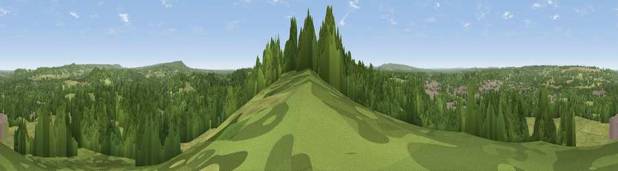

Viewpoint near Bramley
#29185 in England · top 19% of its area beats it · near BramleyWhere it is
The exact computed spot (SU 99325 44525). Click the marker for map links.
The view, rendered

A 360° render of this exact spot computed from the terrain model, tree cover and land cover — summer colours, afternoon light, calibrated against photographs of famous viewpoints. Real trees, hedges and buildings will differ in detail.
The panorama
Grey silhouette: terrain skyline in each direction (720 bearings, Earth curvature and refraction included). Dashed green: skyline with trees (+15 m) and buildings (+8 m) as obstacles. Blue strip: how far the ground is visible on each bearing.
Where the view opens
Wedge length = distance to the farthest visible ground on that bearing (vegetation-aware). Rings at 10, 25 and 50 km.
What fills the view
49% woodland · 43% grassland · 5% built-up · 2% cropland
Angular shares of the visible panorama (visual magnitude), not map area. Landscape diversity 0.42 (0–1 Shannon).
Key numbers
More beautiful places nearby
The staircase of upgrades: each row has a higher view potential than everything closer. Driving times are estimates from straight-line distance, calibrated against real road routing — check an actual route before setting out.
| Place | Direction | Drive | Score |
|---|---|---|---|
| Chinthurst Hill | ENE · 2 km | ~6 min | 41.6 |
| Viewpoint near Guildford | NNW · 4 km | ~10 min | 47.8 |
| Viewpoint near Compton | NW · 5 km | ~11 min | 49.4 |
| Viewpoint near Shamley Green | ESE · 6 km | ~12 min | 49.9 |
| Viewpoint near Hascombe | SSE · 6 km | ~13 min | 59.6 |
| Viewpoint near Hascombe | S · 6 km | ~13 min | 62.0 |
| Viewpoint near Ewhurst | ESE · 8 km | ~17 min | 63.9 |
| Pitch Hill | ESE · 9 km | ~18 min | 64.4 |
51.19133, -0.58004 · source: screening · position refined by local search. Computed location — check access rights before visiting.